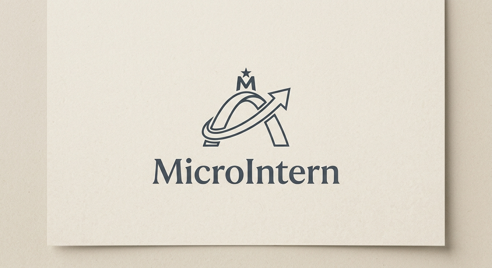

Faites de vos compétences une vraie expérience.
Réalisez des missions ponctuelles, gagnez un revenu et enrichissez votre parcours professionnel avant même le diplôme.
Trouver sa voie →
MicroInternSousse · Étudiants & entreprises
MicroIntern rapproche les étudiants motivés et les entreprises qui ont besoin d’un coup de main ponctuel. Une mission utile, une expérience concrète.
Une rencontre gagnant-gagnant
Réalisez des missions ponctuelles, gagnez un revenu et enrichissez votre parcours professionnel avant même le diplôme.
Trouver sa voie →Accédez à des compétences adaptées pour vos besoins ponctuels, avec une mise en relation simple et rapide.
Trouver un talent →Mission à la une · Exemple de mission
Découvrez un exemple concret de mission MicroIntern et les détails à définir avant sa réalisation.
Voir la mission ↗Simple comme bonjour
Une démarche claire, de la première prise de contact à la mission.
Étudiant ou entreprise, dites-nous ce que vous recherchez.
Nous précisons les compétences, le besoin et les disponibilités.
Les modalités sont convenues avant le début de la mission.
Prêt à faire le premier pas ?